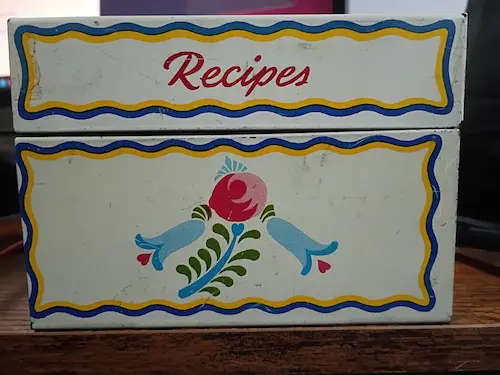
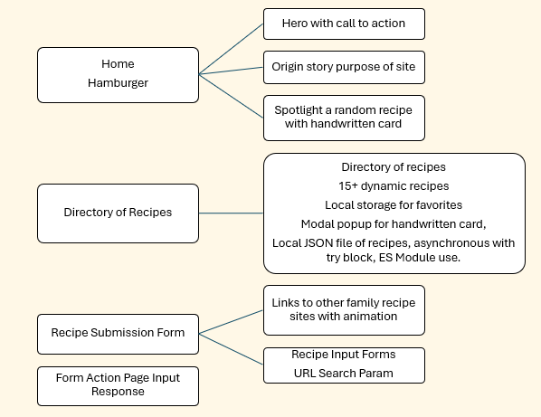
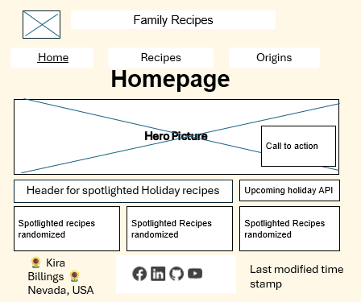
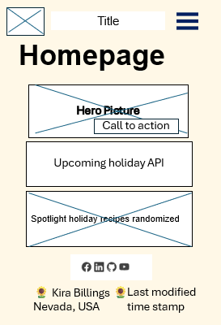

Site Name
Family Recipes
The reason for the site name is to describe the content of the site.
Site Purpose
This website will serve as a resource hub for family members to find family recipes. It will provide information on origin of the recipe, including images of handwritten recipes from Grandma Aina Harrison and others. It aims to preserve the sentimental nature of the recipes cards and the foods the family grew up with.
Target Market
Family members of myself to include immediate family members, in-laws, children, grandchildren, parents, sisters, brothers, nieces and nephews. There are approximately 90 family members
Scenarios
- 1. Generation Y and Z: The great grandchildren of Aina Harrison are getting married and having children and starting their own households. They are looking for the a high-tech ways to find and use the recipes they grew up with but are also open to new recipes. They want the recipes on easy found on their smart phones.
- 2. Generation X: Kira's generation, the grandchildren of Aina Harrison - have years of experience at cooking with both recipe cards and smart phones. They serve as the bridge between the traditional and baby boomer generation.
- 3. Baby Boomers: Aina's children and Kira's parents, may be the smallest group but they have the most experience with the recipes. They have their favorites and will love to see the nostalgic and personal touches on the recipe card images.
Typography
Font Family: ___Using Noto Sans from Google fonts for subheadings, main content, recipes.
Special annotations with Homemade Apple for the handwritten cursive recipe cards
Damion to copy the font on the recipe box for headings only.
Color Scheme
The design is based off of Grandma Aina's old recipe box with very distinct colorful images of kind of old-fashioned but that's what makes it special. See photo below.
background and text on dark: --cream: #fff8e7;
Main Color and borders: --recipe-blue: #0654ae;
borders and accents: --yellow: #ffb900;
images and accents: --pink: #ee7181;
images and accents: --box-red: #941c32;
images and accents: --dark-green: #14601D
Text color: --text-dark: #292722;

Site Map

Wireframes
Desktop

Mobile
